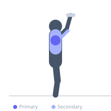

Exercise guide / Dumbbell Overhead Press
Dumbbell Overhead Press
The dumbbell overhead press trains the deltoids and triceps in an overhead pressing pattern using independent dumbbells, which allows each arm to move freely and reduces the risk of one side compensating for the other. It can be performed seated or standing, with the seated variation providing lumbar support.
Primary muscles
deltoid anterior
deltoid lateral
Secondary muscles
triceps long head
triceps lateral head
trapezius upper
Stabilizers
supraspinatus
infraspinatus
Equipment
Dumbbell (Fixed)
Optional
Adjustable Bench (Incline / Decline)


Starting position
- Sit on a bench with back support (or stand) holding a dumbbell in each hand at shoulder height. Palms face forward, elbows at approximately 90 degrees and slightly in front of the torso.
Setup
- If seated, set the bench back to 90 degrees for spinal support. Use knee-kick technique to bring heavy dumbbells into position.
Steps
- Press both dumbbells upward and slightly inward until arms are fully extended overhead.
- At the top, the dumbbells can touch lightly without clashing.
- Lower the dumbbells under control back to shoulder height with elbows at 90 degrees.
Coaching cues
- Press up and in slightly — finish with biceps close to your ears
- Keep your ribcage down — do not flare it to fake overhead mobility
Breathing
- Exhale on the press. Inhale on the descent.
Range of motion
- Full extension overhead, return to 90-degree elbow angle at the bottom.
Tempo
- 2-0-1-0
Common mistakes
- Pressing with palms facing each other (neutral grip) reduces anterior delt involvement
- Allowing the elbows to flare excessively wide behind the torso
Safety
- Avoid if shoulder impingement is present — neutral grip or reduced range may help
- Use knee-kick technique to avoid shoulder injury when loading heavy dumbbells
Training
- hypertrophy: 8–15 reps
- endurance: 15–20 reps
- hypertrophy: 3–4 sets
- endurance: 2–3 sets
- Rest: {'hypertrophy': 90, 'endurance': 45}